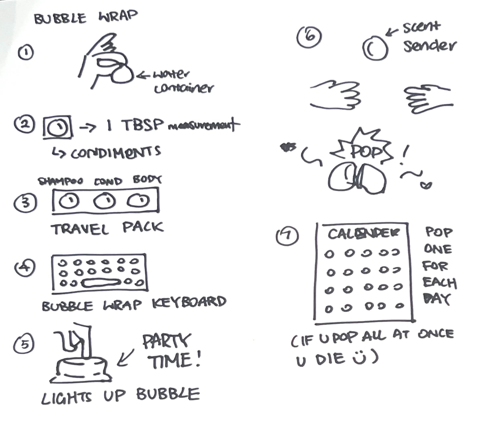
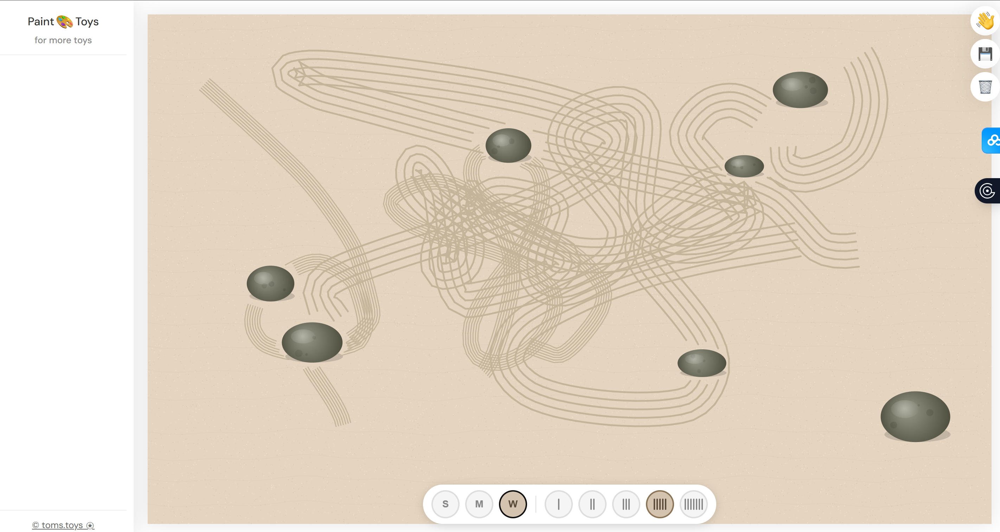
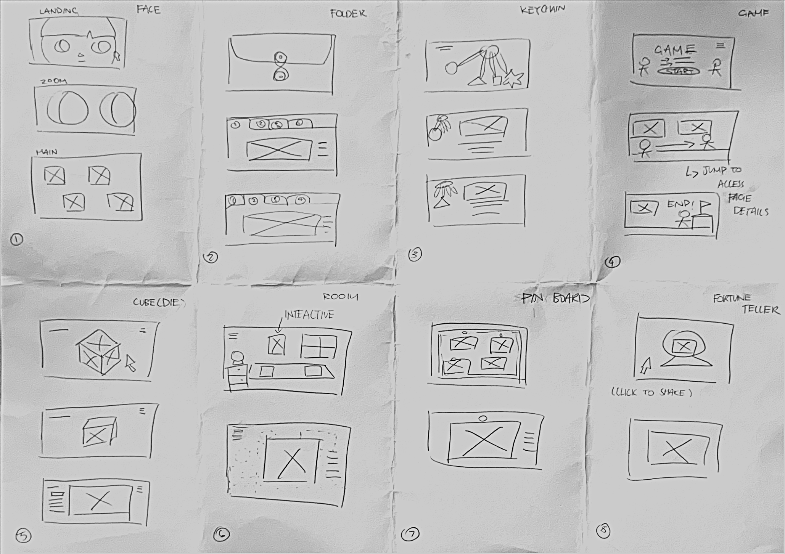

A "Gesture" for Bubble Wrap to ...
< !-- hover to see --! >
- A water container?
- A keyboard?
- A scent sender?
- A calendar?


< !-- hover to see --! >
- A water container?
- A keyboard?
- A scent sender?
- A calendar?


"Simply drag across the sand to rake patterns. The rake creates parallel lines that follow your movement. Try creating concentric circles, parallel lines, or flowing curves. The beauty is in the process as much as the result." A digital version of raking versions in "Sand and gravel" (The sand coloured background and gravel pngs) You press down and drag your mouse to create patterns of your choice, as well as the ability to alter the size and the number of rake teeth at the bottom tool bar. You can also save and discard your creation through the emojis on the right panel. However, when interacting with the sand and gravel, there are no sound effects, which I think if they did have the addition, it will make the user experience more coherent and aid the meditative effect that Tom was looking for. This website is a part of TOMS TOYBOX, the Pain.toys created by Tim Holman

< !-- click to explore --! >
Each one of the 8 wireframes were drawn in 60 seconds to help generate a varied collection of potential wireframs for my final workbook.
I ended up choosing the 1st iteration and created low-fidelity prototype in Week 2